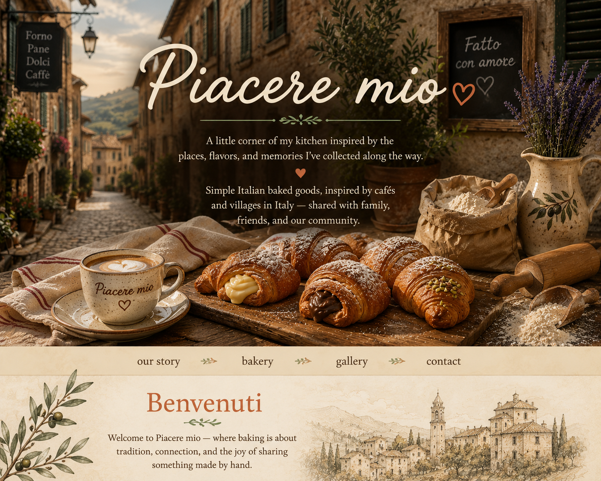
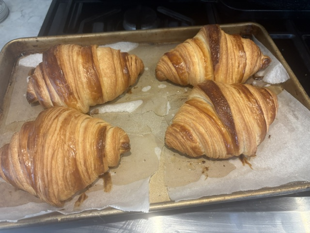

``` ```A little corner of my kitchen inspired by the places, flavors, and memories I've collected along the way.
I love exploring food traditions from Italian cafés, village bakeries, and neighborhood markets. Every bake teaches me something new, and sharing those discoveries with family and friends has become one of my favorite traditions.
I hope something here inspires your own table.
```
Soft, golden Italian pastries inspired by mornings in Italian cafés.
Simple ingredients, traditional techniques, and the joy of sharing pizza together.
New discoveries from the Italian traditions that inspire my kitchen.
Fresh cornetti this morning.
Pizza dough resting for tonight.
Thanks for stopping by.
Have a favorite Italian pastry or bread? I'd love to hear what reminds you of Italy.